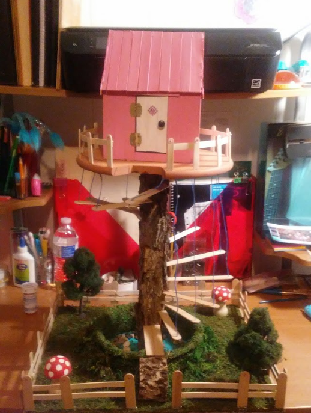
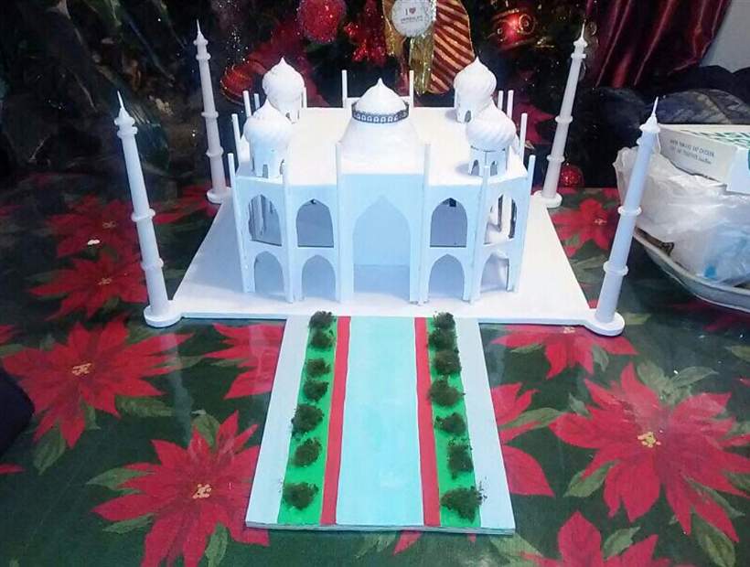
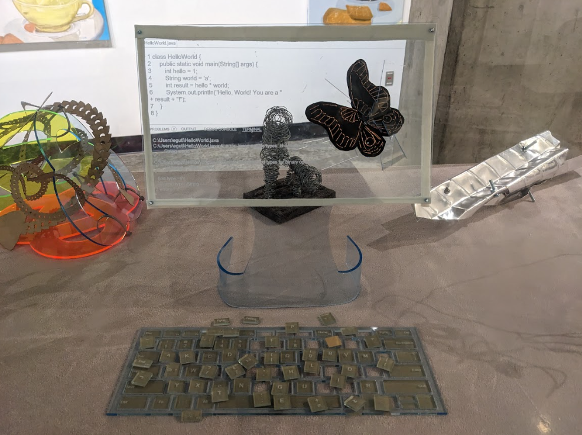
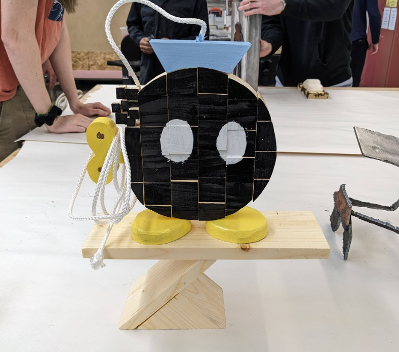

Edna Viviana Gutierrez is a 21-year-old senior at Colgate University.
She plans to major in Computer Science and minor in Art and Art History
with an emphasis on Studio Art. Born and raised in Houston, Texas, where
she was first introduced to Colgate University through the local program
EMERGE.
Fall 2016 - A Tree House

During her first semester as a high school freshman, Edna took an Art
History course at Houston Community College. Over the course of the
semester, the professor would show various historical artifacts from all
over the world and talk about what the meaning behind them was. As a
final exam, the professor decided to ask her students to create a
project that they felt would represent them. Edna decided to construct a
tree house out of materials she had at home. Such materials included: a
chinese checkers board, an old table leg, a plastic water container, and
some old crafts. All of these artifacts represented something meaningful
in her life and her interests. In the end, she used it as a bird house
for her pet birds!
Fall 2017 - Taj Mahal

In her sophomore year of high school, Edna was tasked with picking a
historic architectural landmark in her World Geography Class and present
it during a fair. She decided to present the Taj Mahal and in order to
make the history and meaning behind the Taj Mahal more clear for her
audience, she decided to construct a small model of the Taj Mahal out of
everyday things. She used candles, christmas ornaments, cotton balls,
paint, clay, wood, and cardboard.
Spring 2023 - A Computer Bug

While taking a sculpture class during her junior year, Edna was given a
project where she had to use a laser cutter to create any sculpture.
After thinking long and hard, she decided to create a sculpture that
would showcase her interest in Computer Science. During her Introduction
to Computer Science I, in her book, she remembered reading about a
female computer scientists who had discovered an real bug in her
computer that was actually causing errors in the computer. The terms
"bug" and "de-bugging" always reminds her of this story, and she decided
to create a model of what that would look like.
Bomb-omb

In her sculpture class, as a final exam, she was given a 18in x 5in x
3in piece of wood and asked to make something out of it. Edna decided to
have fun with this project and build a Bomb-omb from Mario that appeared
to be pixelated. She then painted it and added a rope that made it seem
like it had an actual fuse.